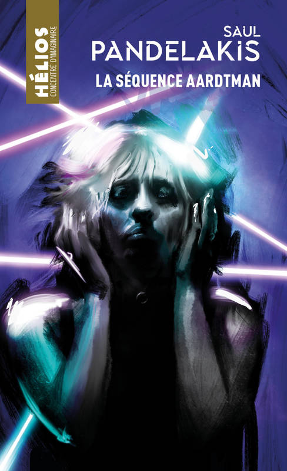
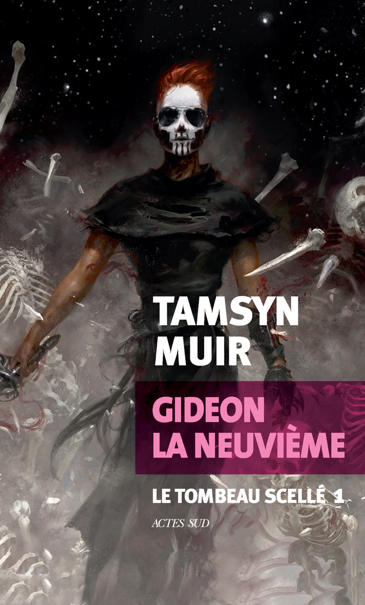
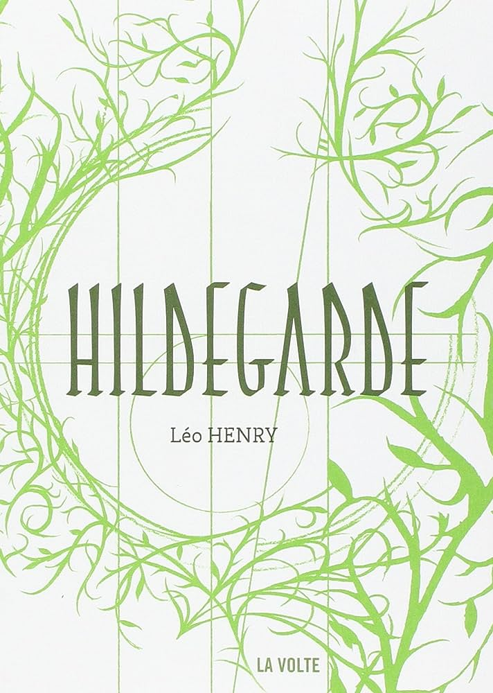
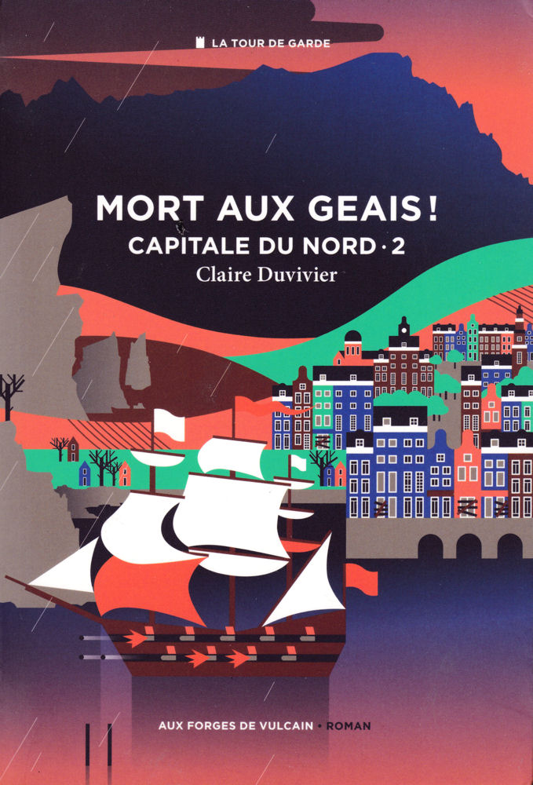
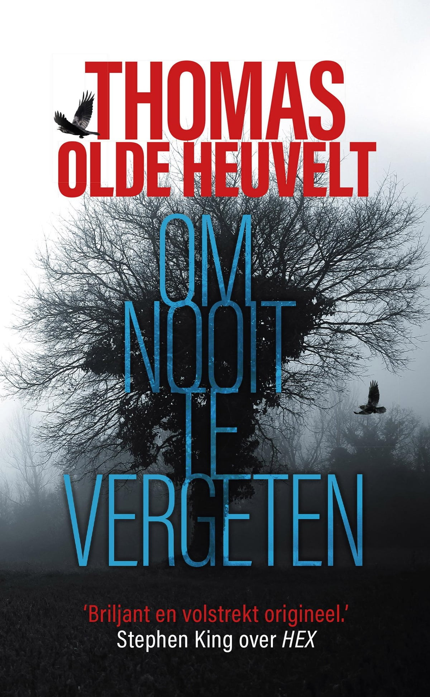

Chaque fin d’année, j’aime revenir sur certains livres qui m’ont accompagné tout au long des douze derniers mois. Et comme d’habitude, leur année de parution n’a aucune importance.
La séquence Aardtman, de Saul Pandelakis. Magistral. Il faudra bien que ce roman soit traduit, qu’il quitte l’univers francophone pour s’offrir à d’autres horizons linguistiques. En attendant, je suis content d’avoir eu la chance de découvrir ce livre, qui représente tout ce que j’aime dans la science-fiction et dans la littérature en général.
Dans la maison rêvée, de Carmen Maria Machado. Marquant. Par sa forme, bien sûr, car chaque court chapitre est rédigé “à la manière de” (d’un roman noir, d’un livre dont vous êtes le héros…), bondissant de style en style. Mais aussi, surtout peut-être, marquant sur le fond. C’est une autobiographie, et plus particulièrement le récit d’une relation abusive. L’autrice y raconte comment sa compagne de l’époque a progressivement fait de sa vie un enfer. C’est un livre à la fois subtil, riche et implacable.
Gideon la Neuvième, de Tamsyn Muir. Kiffant. Un univers bizarre, des squelettes par centaines, des pratiques occultes à l’échelle galactique et une héroïne au caractère aussi mauvais qu’elle pète la forme. Un bouquin très divertissant qui n’oublie pas d’être inventif.
Hildegarde, de Léo Henry. Étrange. Le vaste portrait d’une moniale du douzième siècle aux multiples compétences, qui réussit à être fluide et varié. L’auteur nous plonge dans le monde qui fut celui de Hildegarde de Bingen, son univers géographique, spirituel, politique, voire psychologique, et le fait admirablement bien.

La Grand Livre, de Connie Willis. Tourbillonnant. L’histoire d’un voyage dans le temps, depuis un XXIème siècle futuriste vers un XIVème siècle peu accueillant. Et surtout, une histoire qui ne nous laisse pas le temps de respirer, qui saute d’une péripétie à l’autre tout en se permettant un running gag par-ci par-là sur fond de chaos dramatique. Des mois plus tard, j’essaie toujours de reprendre mon souffle.
L’année ayant été fructueuse, j’ai envie d’en citer d’autres. Un dernier verre au bar sans nom, de Don Carpenter, qui raconte la vie d’un couple d’écrivains dans les États-Unis des années soixante, dont l’écriture m’a beaucoup plu. Annihilation, de Jeff VanderMeer, la plongée d’une biologiste dans une zone bizarre et hostile, peuplée d’un bestiaire délirant. Mort aux geais !, de Claire Duvivier, et Trois Lucioles, de Guillaume Chamanadjian, tomes 2 du double cycle de La Tour de Garde, qui avait déjà superbement commencé. Il y a aussi eu Le guet des orfèvres, de Terry Pratchett, super polar fantasy et véritable satire sociale. Et puis Archives de l’Exode, troisième tome du cycle des Voyageurs, de Becky Chambers : un space opera doux et optimiste, qui évite avec brio de tomber dans la niaiserie.
D’un point de vue plus personnel, je suis très content d’avoir réussi à terminer un recueil de nouvelles en néerlandais, Om nooit te vergeten (“Pour ne jamais oublier”), de Thomas Olde Heuvelt. Il contient notamment une nouvelle qui a reçu le prix Hugo de la meilleure nouvelle longue en 2015, traduite vers l’anglais sous le nom The Day the World Turned Upside Down. Mon avis sur ces nouvelles se limite toutefois à me réjouir d’avoir compris de quoi elles parlaient.
C’était une super année de lecture. J’aurais pu évoquer encore d’autres livres (Une sortie honorable, d’Eric Vuillard, Rossignol, d’Audrey Pleynet, Tokyo, de Mo Hayder, Dernière nuit à Montréal, d’Emily St. John Mandel,…), mais il faut bien faire des choix. Vivement la suite.